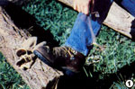
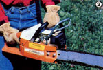
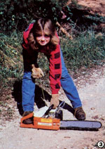
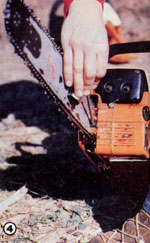
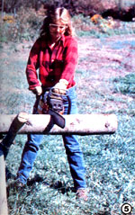
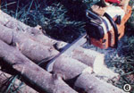
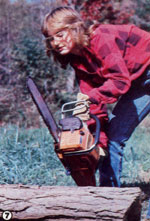

In order to get the most from your woodstove, you'll have to cut your own wood, and that requires an understanding of...
When I first decided to try to make it on my own in an isolated mountain cabin, I suppose I let the "glamour" of the idea get in the way of common sense, Anyway, I soon discovered that the self-sufficient lifestyle demanded that I put myself into a "crash course" mentality . . . in order to pick up the innumerable necessary skills that my city-girl life hadn't taught me.
Since my new home was wood-heated (and because the Colorado winters can be pretty harsh), one of my first self-teaching projects began when I bought a chain saw and set out to gather my own fuel supply.
A lot of my urban friends were skeptical. After all, as they pointed out, I am a small woman. And was I sure, they asked, that I was "up to" tackling such a noisy and dangerous tool? But, after a lot of preparation and a few mistakes (none of which did me any serious harm), I can now sit by a warm stove and look out the window at a substantial woodpile . . . feeling a good deal of pride and satisfaction in what I'm capable of accomplishing.
This article, which is based upon my own learning experiences, will share with you-the beginning chain saw operator-some techniques and safety sense that, I hope, will Increase your competence and your confidence.
Right off, make sure that you buy (or, better yet, borrow ... since in that way you might well be able to try several models before deciding what size and type is best for you) a saw you can lift, carry, and maneuver without too much strain. There are a number of "mini-saws" on the market, but you'll need a machine with at least a 14" bar If you Intend to bring in a full-time fuel supply for your woodburner.
Don't wear loose-fitting clothes, which may get in your (or the saw's) way. Instead, rig yourself out in boots with nonslip soles, heavy pants or jeans, a longsleeved top, and gloves . . . and if your hair is long, tie it back out of the way. I also wear safety glasses, earplugs, and-if I'm working on standing trees-a helmet to protect myself from falling limbs.
Before you even start the tool's engine, practice holding and moving your saw. Simulate a working stance, with your feet apart and your left foot slightly forward to provide a sure-but comfortable-balance. (Don't ever try to make a cut while standing in an awkward position!)
Be sure, too, that you're familiar with the controls, especially the chain lubricator (which you should use often during your labors if your saw's oiler isn't automatic!) and the on/off switch.
Now, start the tool, by yourself, on a flat surface ( not on your leg or kneel) . . . making certain that the bar isn't touching anything: the ground, logs, rocks, or any part of you! When that's assured, grip the front handle with your left hand and place the toe of your boot In the "boot loop" to help hold the saw steady. The starting switch should (of course) be on, the choke out, and the gas lever on.
With your right hand, give the cord a good, strong, fast pull ... and don't be discouraged if the tool doesn't start up right away. (Once the engine "fires" a time or two with the choke out, you may have to push that control back in to start the saw.) I have trouble sometimes, too, and I've learned that cussing doesn't help as much as do perseverance and firm determination.
After the engine is running and the choke is off, grip the machine firmly with both hands . . . thumbs and fingers encircling the handles, and right index finger on the gas lever. If this is the first time you've ever operated a chain saw, simply hold it for a while-using the throttle to vary engine speed-until you get used to its vibration... and then practice both starting the tool and turning it off.
You should, as a matter of fact, always shut off the engine when moving from one log to another and before you set the saw down. And, while you shouldn't work alone (you may need help In case of an accident), don't allow people-especially children-or pets near you (or out of your line of sight) while the saw's in operation.
Finally, you must be alert in order to maintain safe working conditions, so don't drink alcohol or take any "dulling" medicines immediately before (or during) your spells of chain saw work.
Now that the saw is running, don't think you're ready to head right out and cut down a tree. At first you should confine your efforts to trimming "downed" logs to size. Later, if you want instructions on tree felling, read Barnacle P arp's Chain Saw Guide excerpted in MOTHER NOS. 54 and 55, or Wood Heating Handbook by Charles Self. And supplement such readings by finding an experienced tree cutter who can teach and supervise you. [EDITOR'S NOTE: Sells Wood Heating Handbook (1977) is published by TAB Books at $5.95 . . . ask for it at your bookstore.. Barnacle Parp's Chain Saw Guide is available-for $7.95 plus 95 cents shipping and handling-from Mother's Bookshelf, P.O. Box 70, Hendersonville, North Carolina 28791 . . or you may purchase issues 54 and 55. for $3,00 each, plus $1.00 shipping and handling per order, from THE MOTHER E ARTH NEWS(restricted), P.O. Box 70, Hendersonville, North Carolina 28791.]
OK, let's start. Your machine is running at high speed (never let the engine operate at a low RPM at the start of-or during-a cut) . . . you are standing in a comfortable position, firmly balanced . . . and the log is lying in front of you or, better yet, is safely supported on a sawbuck. Now, lower the saw so that the wood meets the chain well back on the straight portion of the bar (the area closest to the engine). Normally, at this stage, cutting is done from the top of the log, letting the weight of the saw and the pull of the chain carry the blade down and through the wood. (If your chain is sharp, you won't need to push or use a "sawing" motion . . . the engine will do the work.)
When you near the end of your cut, be ready to lift the saw up and out of the log, while maintaining your balance. And, if your future firewood is lying on the ground, be sure to stop before you cut into the dirt and rocks, since contact with such materials will quickly dull the chain (and could lead to an accident!). It's best to roll the log (using a handy limb or a peavey) before finishing your cut.
Often a log will be positioned in such a way that-as the saw works down from the top-it will "pinch" the blade (and a tool stuck in this manner can be very difficult to remove). In order to avoid the problem, keep an eye on the cut as you work. If the opening begins to close, remove the blade and then (assuming, of course, that the log is supported in some way) finish the job by cutting up, using the top of the blade, from beneath the log. (If the saw does get trapped, turn it off immediately. Then have a friend help you pry the timber in whatever direction is necessary to open the cut and free the bar. Should that prove impossible, you might have to use another saw and shorten the log enough to allow the pinched cut to be forced open.)
One of the biggest dangers facing the chain saw user is kickback. This occurs when the chain, as it speeds around the nose of the bar, hits something solid and forces the saw back toward the operator. Always be alert for this possibility . . . keep the nose of the chain clear . . . and make your cuts back on the straight portion of the bar, closest to the engine, whenever you can. Also, work with your left elbow locked (or your left arm held as straight as possible) to block or absorb any kickback that might occur ... and keep the saw blade slightly to your right while cutting, so that the blade-if it does kick back-will miss your body.
Accidents do happen, so be careful and don't overextend yourself . . . getting worn out is one of the worst things you can do. Set your own pace and take a break-or quit-when you're tired.
Learn to perform all the routine tasks of saw maintenance yourself. (A friend once helped me with my saw, and when it came time for me to make the same adjustments, I couldn't budge the nuts and bolts that my assistant had previously tightened!) Basic maintenance instructions will be included in the owner's manual that comes with your implement. (If you buy a used machine, you can probably order a manual from the manufacturer . . . simply write to inquire, giving as much information about your tool-model number, etc.-as possible.)
Typical chores will include mixing the gasoline and engine oil (because chain saws use two-cycle powerplants, oil must be blended with the gasoline ... check with your dealer for appropriate oils and mix ratios), keeping the chain oil tank filled (with a lubricant different from that used in the fuel . . . again, ask your dealer or an experienced friend), and adjusting chain tension. (If you work on the saw soon after running it, remember that many parts will likely be hot. Wear gloves.)
It'll be necessary, perhaps, to have your chain professionally machine-sharpened every so often, but you can take care of in-between touch-ups yourself. There are various devices on the market designed to help with this task (see the article following this piece), but most will require that you have a sharp file. Proper filing instructions are probably included in the owner's manual .. . or someone else who's done the job can show you how.
And, speaking of experience, do be sure to take advantage of opportunities to talk with-and watch-folks who are old-timers at wielding this tool. (I've noticed, though, that familiarity sometimes breeds carelessness, so keep some safety sense in mind while watching "pro's" who might have abandoned some caution as a result of overconfidence.) Your own know-how, however, will grow only with practice.
Make no mistake about it, using a chain saw is hard and-especially for careless people-somewhat hazardous work. Still, such machines are certainly no more dangerous than are many of the power tools we often have to rely on. Just use "horse sense" and keep practicing . . . before you know it, you'll find your skill increasing and your woodpile growing. And believe me, both of those achievements are well worth working toward!
|
 [1] Protective dress is important when using a chain saw. |
 [2] Here's the grip required for safe maneuvering of the machine. |
 [3] Start the engine on a flat surface, making certain the bar is clear of obstacles. |
|
 [4] Be familiar with basic maintenance chores, including adjustment of the chain. |
 [5] A woodcutter demonstrates the proper stance (feet apart, left foot slightly forward) and the use of a sawbuck for safe cutting. |
 [6] Note that the tip of the saw is about to come in contact with an unseen log. This dangerous way to cut wood can result in |
|
 [7] kickback, which forces the saw's chain up toward your body. |
|
|